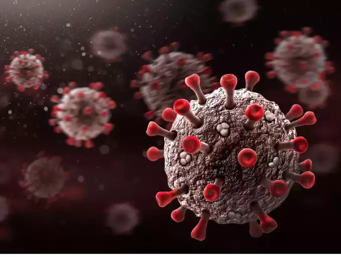

Covid-19: subvariante inédita do coronavírus é identificada em São Paulo
Um sequenciamento genômico identificou uma variante , até então inédita, do Sars-CoV-2, vírus causador da Covid-19 em uma criança de 3 anos na cidade de São Paulo. Trata-se de uma recombinação da variante ômicron. O levantamento feito pela Rede Dasa identificou que o vírus tinha informações da variante ômicron, mas com pedaços de uma segunda mutação.
“A diferença de variante para recombinante, é que as variantes são novas linhagens. Aqui, não. Houve uma mudança de pedaços de RNA viral. Isso quer dizer que uma pessoa foi infectada por BA.1 e BA.2 simultaneamente e em algumas das células infectadas, ao fazer a replicação, houve a mistura dos dois genomas”, disse José Eduardo Levi, virologista da Dasa, ao Globo. O laboratório já identificou, ao todo, três amostras que sofreram uma recombinação em seu trabalho de sequenciamento genômico. Além desta, que ainda não tem nome, a chamada Ômicron XE foi identificada por eles e pelo Instituto Butantan.